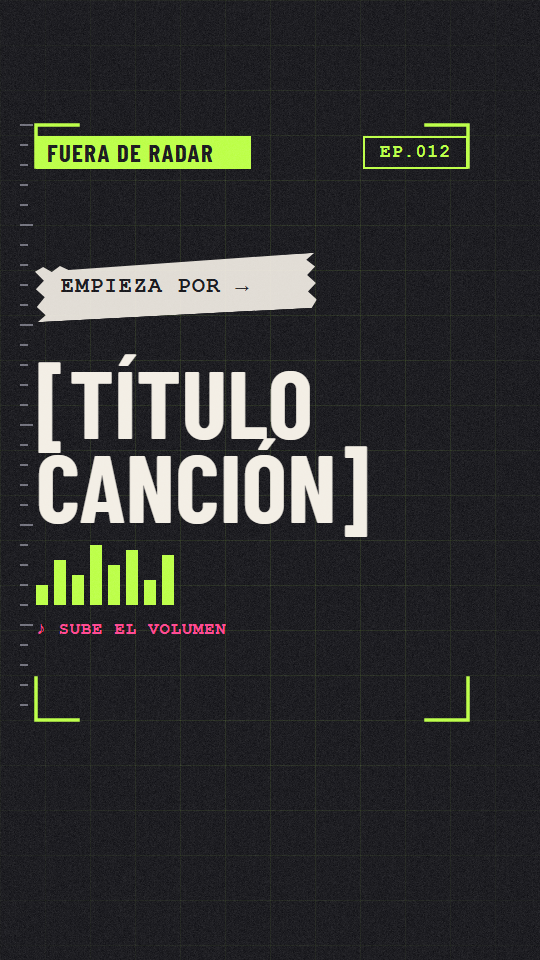
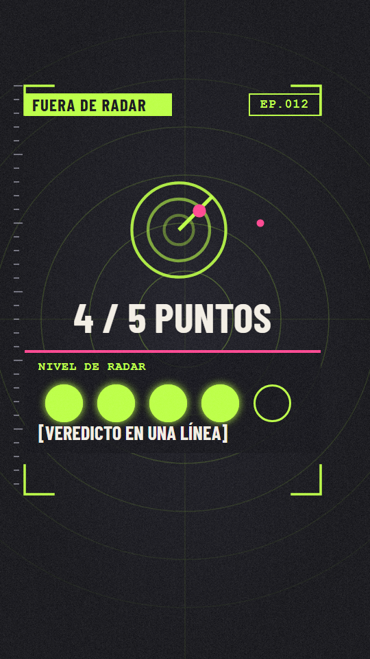
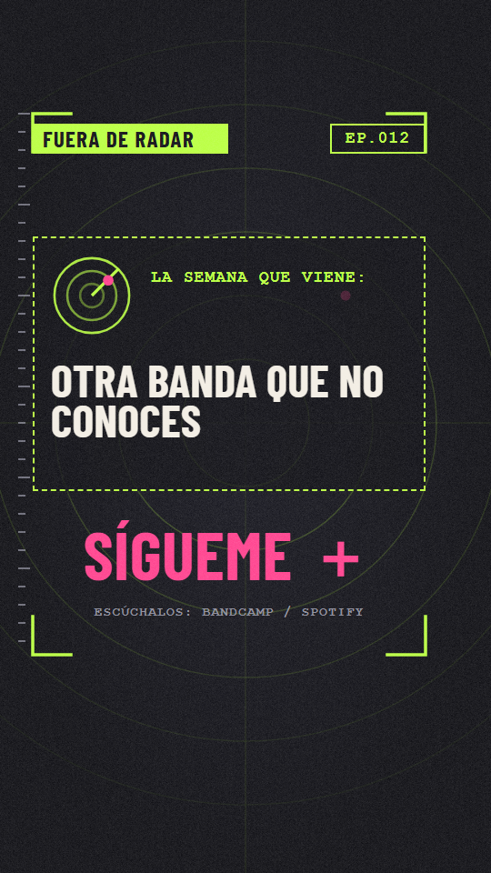
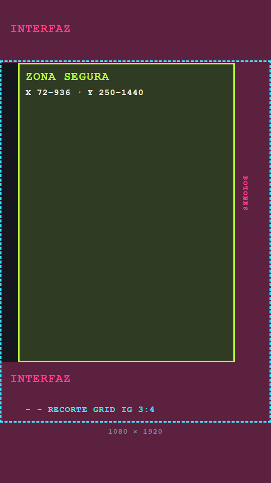
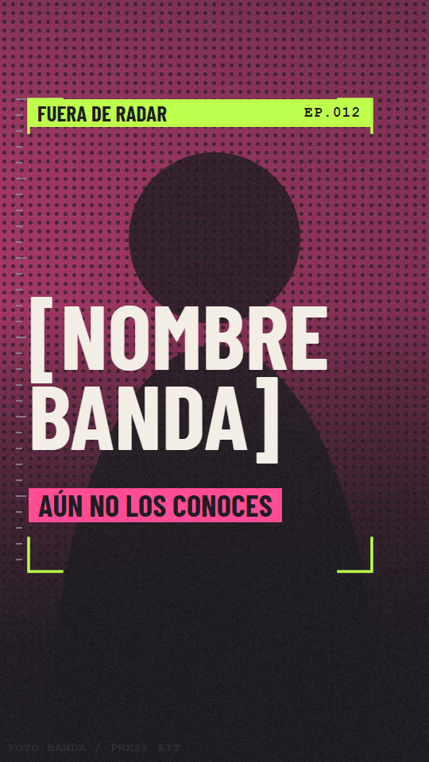
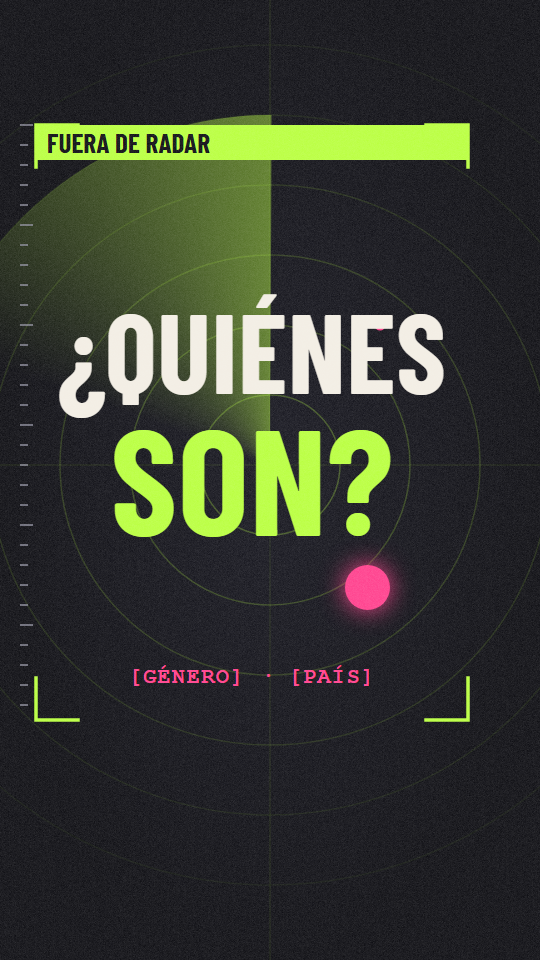
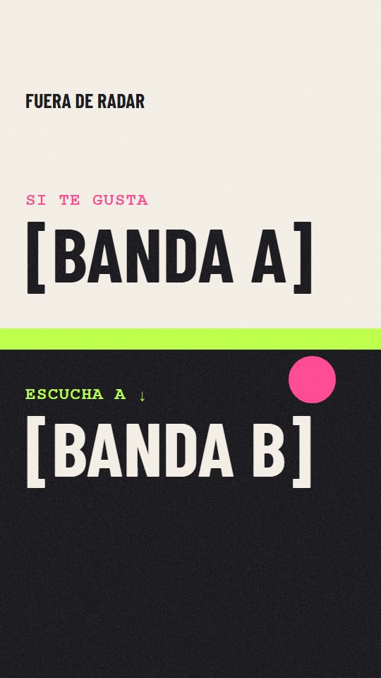

El enfoque
El concepto en una línea: cada semana, un "ping de radar" de 40 segundos: una banda que el espectador no conoce, una razón para darle al play y una forma clara de seguir escuchando.
Promesa a la audiencia
"En 40 segundos sabrás si esta banda es para ti y habrás escuchado su mejor momento."
Por qué puede funcionar
Descubrir música es un hábito diario, el "si te gusta X" ya es como la gente busca, y los vídeos solo de texto son baratos, rápidos y centrados en el sonido.
Por qué es difícil
Las bandas desconocidas no tienen búsquedas, así que el gancho, la comparación con una banda conocida y el formato recurrente hacen el trabajo. Los derechos musicales son el principal riesgo (sección 08).
Formatos de la serie (misma plantilla, distinta forma)
| Formato | Duración | Frecuencia | Qué es |
|---|---|---|---|
| Radar Pick | 38–45 s | Semanal (principal) | Una banda, con el guion estándar de la sección 03. |
| Doble Blip | 30–35 s | 2.º hueco semanal opcional | Dos bandas parecidas ("Si te gusta A, prueba B o C"). |
| Barrido de género | 50–60 s | Cada 2–3 semanas | Tres bandas de un género o país, 15 s cada una. |
| Rewind | 55–60 s | Mensual | Resumen de las mejores bandas del mes. Reutiliza solo material ya autorizado. |
Flujo de producción (un vídeo maestro, dos plataformas)
- Elegir e investigar (20 min): escoge la banda, verifica cada dato que saldrá en pantalla y rellena Video_Template/Episode_Sheet.csv.
- Resolver derechos primero (en paralelo): envía el correo de permiso (Permission_Request_ES.txt) a la banda o sello. No edites hasta tener un sí por escrito.
- Montar desde la plantilla de CapCut (45–60 min): cambia texto, foto y audio; elige el color de acento del género.
- Exportar una sola vez (MP4 1080×1920 limpio, sin cierre de CapCut ni marca de agua).
- Subir de forma nativa a ambas plataformas desde el mismo archivo, con descripción y hashtags distintos en cada una. Nunca resubas un vídeo descargado de la otra plataforma (las marcas de agua penalizan el alcance).
- Fijar un comentario con enlaces a la banda (Bandcamp / Spotify / web oficial) y créditos de foto y música.
- Revisar a las 48 h: retención, deslizamiento, compartidos, guardados, seguidores.
Frecuencia y cuándo escalar
Empieza con 2 vídeos por semana durante 4 semanas para aprender qué funciona y después fija un ritmo sostenible. Escala solo si los números lo justifican. Son heurísticas de trabajo, no reglas de las plataformas:
Se quedaron a verlo
en YouTube Analytics ("visto vs. deslizado")
Duración media vista
de la duración (el bucle ayuda)
Compartidos + guardados
de las visualizaciones. El descubrimiento vive de compartir.
Seguidores
por cada 1.000 visualizaciones, al alza
Si tres vídeos seguidos superan estas cifras, pasa a 3 por semana. Si tras 8 vídeos estás por debajo, cambia el gancho y los primeros 2 segundos antes de tocar nada más.
Descripciones y descubrimiento (el texto no va dentro del vídeo)
YouTube Shorts
- Título (≤ 60 caracteres): "[BANDA]: si te gusta [A]". Palabras clave primero.
- Descripción: 2 líneas sobre la banda, enlaces, créditos de foto y música y 3 hashtags.
- Enlace a la banda en el comentario fijado.
- Añade los Shorts a una lista "Fuera de Radar" para maratones.
Instagram Reels
- La primera línea de la descripción funciona como gancho: "Si te gusta [A], necesitas a [BANDA]".
- Invita a la banda como colaboradora (publicación Collab) para que el vídeo llegue también a su audiencia.
- 3–5 hashtags relevantes (género, "musicanueva", etiqueta de la serie).
- Añade texto alternativo y una portada que sobreviva al recorte 3:4 de la cuadrícula (sección 07).
Plan de lanzamiento a 30 días
| Semana | Objetivo | Acciones |
|---|---|---|
| 0 | Preparación | Elegir nombre y comprobar handles, montar el maestro de CapCut desde la plantilla, escribir 8 correos de permiso, crear la Episode Sheet. |
| 1 | Producción en lote | Producir 4 episodios de una tacada con bandas que dijeron sí. Mantener un colchón de dos. |
| 2–3 | Publicar y probar | 2 por semana. Probar dos estilos de gancho (sección 03) y dos miniaturas (sección 07). |
| 4 | Decidir | Quedarse con el mejor gancho y formato, fijar la frecuencia, avisar a las bandas y pedirles que compartan. |
Propuestas de nombre
Criterios: corto para un handle, que diga "descubrimiento" de un vistazo, que funcione hablado y escrito y que encaje con la identidad visual radar/fanzine. Antes de elegir: busca el nombre en YouTube, Instagram, TikTok y un registrador de dominios, y haz una búsqueda de marca en tu país. Es probable que casi todos estén usados en algún sitio, así que comprueba el handle exacto y los conflictos en el nicho musical.
| # | Nombre | Eslogan | Por qué funciona | Ojo con |
|---|---|---|---|---|
| 1 ★ | Fuera de Radar | Una banda que no conoces. | Comunica descubrimiento al instante; el lenguaje visual del radar sale solo. Funciona como un "ping" recurrente. | Expresión común: búsqueda saturada. Usa un handle distintivo (p. ej. @fueraderadar.bandas). |
| 2 | Bajo el Radar | Música que se te escapó. | Muy natural en español y cercano al nombre 1. | Muy usado como expresión general. |
| 3 | Cara B | Las bandas detrás de los éxitos. | Nostálgico, comunitario, bueno para merchandising. | Evoca discos antiguos; aclara que son bandas actuales. |
| 4 | Lo Que No Suena | Y debería. | Promesa clara y un punto de provocación. | Más largo como handle. |
| 5 | Blip | Una señal nueva cada semana. | Cortísimo, propio, encaja con la marca-logo. | Difícil de buscar; necesita un eslogan fuerte en la bio. |
| 6 | Aguja en el Pajar | Encontramos la aguja. | Metáfora potente de curaduría. | Fuera de contexto no suena a música; añade "bandas" al handle. |
| 7 | Órbita Baja | Justo por debajo de tu radar. | Distintivo y memorable, tono espacial/radar. | No es obviamente música. |
| 8 | Pista Oculta | Dale al play a lo que te perdiste. | Término musical, con aire de secreto. | También designa algo concreto en los discos. |
| 9 | ¿Quiénes Son? | Todavía. | Conversacional, conecta con el gancho "seguro que no los conoces". | Dificulta el SEO; mejor como título de episodio. |
| 10 | Señal / Ruido | Atraviesa el ruido de las playlists. | Tono editorial de curador. | Muy usado, incluido contenido tecnológico. |
Guion estándar de la serie
Como no hay voz en off, el guion es una hoja de ritmo de texto en pantalla sincronizado con la música. La estructura nunca cambia (para que el público reconozca la serie); cambian el texto, el orden de algunos bloques, el color de acento y el tratamiento (para que los vídeos no parezcan clones).
La estructura maestra de 40 segundos
| Bloque | Tiempo | Objetivo | Patrón de texto en pantalla | Visual |
|---|---|---|---|---|
| 0 · Gancho | 0,0–2,5 | Frenar el scroll y crear curiosidad. | 1 frase, máx. 7 palabras, 3 líneas cortas, grande (150–176 px). Una palabra en lima. | Foto/vídeo de la banda con tinte de acento; aparecen esquinas + cabecera. La música arranca en un compás enérgico, no en la intro. |
| 1 · ID | 2,5–6,0 | Quién es. | [NOMBRE BANDA] (150 px) + línea mono: ciudad, país · género · año. | Foto arriba, placa del nombre, etiqueta de cinta opcional. |
| 2 · Suena a | 6,0–13,0 | Situarlos en el mapa mental del espectador. | "Suena a" + [BANDA A] + [BANDA B] y una frase certera sobre el sonido. | Placa de dato; corte al ritmo entre los dos nombres. |
| 3 · Por qué importan | 13,0–21,0 | Dos datos verificables: hito, escena, instrumento, historia. | 2 tarjetas × 4 s, ≤ 7 palabras cada una. Nunca letras de canciones. | Tarjetas con foto/textura distinta en cada una. |
| 4 · Empieza por | 21,0–31,0 | La recompensa: deja respirar la música. | "Empieza por →" + [TÍTULO CANCIÓN]. Casi ningún otro texto. | Momento álgido (estribillo/drop). Barras EQ, zoom lento sobre la foto, fondo de rejilla. |
| 5 · Nivel de radar | 31,0–36,0 | Un veredicto que invite al debate. | "Nivel de radar 4/5" + veredicto en una línea. | Icono de radar, 4 puntos rellenos. Opcional: mini invitación "¿no estás de acuerdo? cuéntame". |
| 6 · CTA | 36,0–40,0 | Seguir + dónde escuchar + bucle. | "La semana que viene: otra banda que no conoces" · "Sígueme" · "Escúchalos: Bandcamp / Spotify". | Placa de cierre. Los últimos 0,3 s vuelven al fotograma del gancho para fomentar el bucle. |
Storyboard (con las capas de la plantilla)



Reglas de redacción del texto en pantalla
- Máximo 7 palabras por pantalla, 3 líneas.
- Velocidad de lectura: unas 3 palabras por segundo; ningún texto menos de 1,2 s.
- Cambia algo en pantalla cada 1,5–3 s (texto, encuadre, zoom, placa).
- Corta al ritmo: a 120 BPM un compás son 2 s y un tiempo 0,5 s.
- Solo datos verificables; guarda las fuentes en la Episode Sheet.
- Nunca pongas letras de canciones en pantalla (otro copyright distinto).
- Describe el sonido con "suena a", no con "copia de".
- Lima para la idea clave; magenta solo para apartes.
- No exageres ("la mejor banda de la historia"). La opinión va en el Nivel de radar.
- Todo dentro de la zona segura (sección 04).
Banco de variaciones
Regla: cambia al menos 3 de estas 5 dimensiones entre vídeos consecutivos: (1) estilo de gancho, (2) variante estructural, (3) color de acento/género, (4) fondo y tratamiento de foto, (5) set de transiciones y frase de CTA.
1 · Estilos de gancho (bloque 0)
- Clásico: "Seguro que nunca has oído hablar de [BANDA]. Vamos a arreglarlo."
- Playlist: "A tu playlist le falta [BANDA]."
- Comparación: "Si te gusta [A], necesitas a [BANDA]."
- Género y país: "[GÉNERO] de [PAÍS]. De nada."
- Cruce: "[A] se enamoró de [B]. Este es el resultado."
- Dato (¡verifícalo!): "[N] oyentes mensuales. Merecen [N×10]."
- Historia: "[AÑO]: un EP. Nadie se enteró. Hasta ahora."
- Reto: "Dale al play. Intenta no repetirla."
- Directo: "Conoce tu próxima obsesión."
- Confidencial: "Nadie te habló de [BANDA]. Te lo contamos nosotros."
2 · Variantes estructurales (mismo sistema visual)
| Variante | Duración | Cambios respecto al maestro |
|---|---|---|
| A · Radar Pick clásico | 40 s | La estructura maestra. |
| B · Si te gusta | 35 s | El gancho es la comparación; bloque 2 más corto; la canción gana hasta 14 s. |
| C · Tres razones | 45 s | El bloque 3 pasa a ser tres tarjetas numeradas (1, 2, 3) de 4 s. |
| D · Línea de tiempo | 45 s | El bloque 3 es una línea de tiempo horizontal: formación → primer disco → hoy. |
| E · Doble Blip | 35 s | Pantalla dividida banda A vs. B, "¿Cuál primero?". Requiere permiso de ambas. |
| F · Adivina el género | 35 s | El gancho es una pregunta; el género se revela en el bloque 2. Impulsa comentarios. |
3 · Descripciones del sonido (frases del bloque 2)
- "Rápido, melódico y un poco triste."
- "Guitarras cálidas, sintetizadores fríos."
- "Folk con dientes."
- "Punk con conciencia pop."
- "Fuego lento y luego un muro de sonido."
- "Riffs pesados, estribillos tiernos."
- "Pista de baile a las 3 de la mañana."
- "Música de carretera para días de lluvia."
4 · Frases de veredicto (bloque 5)
- "Escúchala dos veces."
- "Fans de [A], de nada."
- "Infravalorados se queda corto."
- "Guárdala para luego. Confía."
- "¿Debut? Cuesta creerlo."
- "No es para todos. Quizá sí para ti."
5 · Frases de CTA (bloque 6)
- "Banda nueva cada [DÍA]. Sígueme."
- "Guárdalo para tu próxima playlist."
- "Envíaselo a tu amigo con mejor gusto."
- "¿Qué banda quieres ver? Comenta."
- "Apóyalos: enlace en comentarios."
- "La semana que viene: [GÉNERO] de [PAÍS]."
6 · Variaciones visuales
- Acento por género: lima (por defecto / rock-indie), magenta (punk/pop), cian (electrónica), ámbar (folk/acústico), rojo (metal/hardcore), violeta (jazz/soul/hip-hop). Mantén siempre las esquinas y la cabecera en lima.
- Fondo: Void Rings (por defecto), Void Grid (técnico, bloque de la canción), Bone Paper (variante clara "fanzine" para acústico/folk).
- Tratamiento de foto: duotono · recorte con medios tonos y cinta · pantalla completa con degradado oscuro · imágenes fijas con Ken Burns lento.
- Pack de transiciones: (a) barrido de radar, (b) corte glitch de 3 fotogramas, (c) zoom de golpe 108 %, (d) corte flash al ritmo. Usa una pareja por vídeo.
Guía de estilo visual
Concepto: "Radar × Fanzine". Una interfaz de vigilancia (esquinas, anillos, blips, etiquetas mono) cruzada con un fanzine fotocopiado (cinta, medios tonos, grano, papel rasgado). Se lee como "detectamos lo que el algoritmo se pierde" y es barata de producir porque casi todos los elementos son formas planas.


Paleta de color
Acentos por género (sustituyen al magenta/lima en tintes de foto y resaltes)
Tipografía
Titulares · Barlow Condensed Bold
Todo en mayúsculas, interlineado ajustado (0,88). Títulos, ganchos, nombres de banda. Gratuita, licencia SIL Open Font (Google Fonts), uso comercial permitido. Si no puedes instalarla, alternativas en CapCut: Bebas Neue, Oswald o Anton (revisa la licencia de cualquier fuente que uses).
Etiquetas · Courier Prime Bold
Todo en mayúsculas, espaciado +6 %. Metadatos, etiquetas, contador de episodio, "empieza por". Sensación de máquina de escribir = fanzine. Gratuita (OFL). Alternativa: Courier New Bold.
| Uso | Fuente | Tamaño (1080×1920 px) | Color |
|---|---|---|---|
| Gancho | Barlow Condensed Bold | 150–176 | Bone, palabra clave en Lima |
| Nombre de la banda | Barlow Condensed Bold | 150–220 (reduce en nombres largos, máx. 2 líneas) | Bone |
| Dato / título de canción | Barlow Condensed Bold | 100–190 | Bone / Lima |
| Veredicto, CTA | Barlow Condensed Bold | 56–100 | Bone / Magenta |
| Etiquetas / metadatos | Courier Prime Bold | 30–44 (nunca menos de 30) | Lima / Gray / Magenta |
El control de tamaño de CapCut no equivale 1:1 a píxeles; compara con Template_Preview.png y ajusta hasta que se vea igual.
Zonas seguras

Ambas plataformas tapan los bordes con su interfaz. Mantén todo lo importante dentro de x 72–936, y 250–1440 (las esquinas lima de la plantilla marcan exactamente esa área).
- Arriba 250 px perfil, búsqueda, cámara y barras de título.
- Abajo 480 px descripción, música, cuenta, barra de progreso.
- Derecha 144 px botones de me gusta / comentar / compartir / remix.
- Cuadrícula de Instagram muestra el recorte central 3:4 (1080×1440, línea discontinua) de la portada. Los elementos clave de la portada van dentro.
Las interfaces cambian; haz una subida privada de prueba en ambas apps una vez por trimestre.
Biblioteca de elementos de vídeo


Lenguaje de movimiento y edición
Hacer
- Cortes secos al ritmo; el texto entra en 0,2–0,3 s (pop / deslizar arriba), sin fundidos lentos.
- Empuje lento sobre las fotos: 100 % → 108 % durante el plano.
- Barrido de radar entre bloques importantes (máx. 2 por vídeo).
- Mantén líneas de escaneo (30 %), grano (40–50 %) y viñeta (50–60 %) en todo el vídeo: es el "pegamento" de la serie.
- Fotos en duotono: blanco y negro + tinte Solid (Multiplicar / Superponer, 60–80 %).
- En cada vídeo aparece un blip (punto magenta), siempre en un sitio distinto: un huevo de pascua reconocible.
No hacer
- Más de 2 fuentes, o más de 2 colores de acento en una escena.
- Texto sobre zonas recargadas sin placa ni degradado.
- Efectos "virales", pegatinas emoji o filtros de moda: envejecen la serie.
- Efectos con destellos de más de 3 por segundo (fotosensibilidad).
- Letras, logos de plataformas de streaming o marcas de agua de otros creadores en el encuadre.
- Capturas de Spotify/Bandcamp o portadas de discos sin permiso.
Especificaciones técnicas del vídeo
Lista de comprobación de exportación
- Resolución 1080p, 30 fps, MP4 / H.264
- Bitrate Recomendado o Más alto
- Exportar audio activado, AAC
- Sin cierre ni marca de agua de CapCut
- Picos por debajo de −1 dB, sin saturación
- Visto en el móvil a pantalla completa simulando la interfaz
- El primer fotograma sirve de portada
- Derechos anotados en la Episode Sheet
Notas de subida
- YouTube: un vídeo vertical dentro del límite actual de Shorts se trata como Short. Sube desde la app de Studio o el escritorio; define título, descripción, audiencia ("no es contenido para niños") y lista. Las miniaturas personalizadas de Shorts pueden estar limitadas a la app móvil: compruébalo en tu cuenta.
- Instagram: sube de forma nativa como Reel desde la app o Meta Business Suite. Una cuenta de empresa tiene una biblioteca de música comercial restringida; para tu audio autorizado da igual, pero el audio en tendencia de la app no está disponible en archivos con tu pista ya incrustada.
- No subas el mismo archivo dos veces en la misma plataforma. Sí varía el título/descripción por plataforma.
Plantilla de CapCut
Contenido de la carpeta
Pila de pistas (de abajo arriba)
| Pista | Contenido | Notas |
|---|---|---|
| V1 | Fondo (BG_*) o vídeo/foto de la banda | Fotos: zoom lento 100→108 %. |
| V2 | Tinte sólido (Solid_*) | Fusión Multiplicar/Superponer, opacidad 60–80 %, solo sobre fotos. |
| V3 | Placas L03 / L04 / L05 / L12 | Una por bloque, alineadas automáticamente (capas a pantalla completa). |
| V4 | L01 Esquinas + L02 Cabecera (todo el vídeo) | Nunca se mueven: es la firma de la serie. |
| V5 | L06 Líneas de escaneo (30 %), L07 Grano (45 %), L08 Viñeta (55 %) | Todo el vídeo, por encima de todo salvo el texto. |
| T1–T4 | Texto según Text_Presets | Texto de cabecera, principal, etiquetas, detalles. |
| A1 | Música (autorizada) | Objetivo −14 LUFS. Fundido de salida en los últimos 0,5 s. |
| A2 | SFX (opcional) | Solo efectos libres de derechos / con licencia. |
Construye el maestro en 10 pasos
- Proyecto nuevo → relación 9:16, 1080p, 30 fps. Importa toda la carpeta Video_Template.
- Arrastra BG_Void_Rings a V1 durante 40 s.
- Arrastra L01 + L02 a V4 durante 40 s. Arrastra L06/L07/L08 a V5 durante 40 s con las opacidades indicadas. Son capas a pantalla completa, no hace falta posicionarlas.
- Añade las placas en V3 según el plano (L03 de 2,5 a 6 s, L04 de 6 a 21 s, L05 de 31 a 36 s, L12 de 36 a 40 s).
- Crea los textos desde Text_Presets_ES.csv (fuente, tamaño, color, texto). Compara las posiciones con Template_Preview.png.
- Añade una animación de entrada pop (0,25 s) a cada texto y un barrido de radar rápido (o L09 girando con fotogramas clave) a los 13 s y 31 s.
- Barra de progreso superior opcional: L10 Track bajo la cabecera, L10 Fill con fotogramas clave de escala X 0 → 100 % durante 40 s.
- Añade la foto de ejemplo en V1/V2 para los bloques 0–1, con tinte.
- Añade un clip de música de ejemplo y alinea los cortes con sus marcadores de ritmo.
- Renombra el proyecto OTR_MASTER. Para cada episodio, duplica el borrador, renómbralo (OTR_E012…), sustituye texto/foto/música y exporta.
Si tu versión de CapCut ofrece "Exportar como plantilla" / "Crear plantilla", úsalo con OTR_MASTER (depende de la versión y la región). Si no, tu maestro duplicado es la plantilla.
Estilo de miniaturas
En los feeds verticales la "miniatura" aparece en tres sitios: la estantería de Shorts y la página del canal de YouTube, la cuadrícula del perfil de Instagram y la portada al compartir un enlace. Diseña cada portada como un cartel que funcione a 1/10 de tamaño y haz que el primer fotograma del vídeo = la portada (así no dependes de poder subir una portada personalizada).



| Plantilla | Cuándo usarla | Elementos |
|---|---|---|
| A · Cartel | Tienes una buena foto de la banda con permiso. | Foto duotono + nombre de la banda (≈ 230 px) + etiqueta magenta "aún no los conoces" + barra de cabecera. |
| B · Barrido radar | No hay foto, o el gancho es una pregunta. | Barrido de radar + pregunta en 2 líneas + blip. Totalmente tipográfica y sin fotos: riesgo cero de derechos de imagen. |
| C · Si te gusta | La comparación es el principal atractivo. | Mitad clara/oscura: "Si te gusta [A]" sobre "Escucha a [B]". Bone Paper arriba. |
Reglas
- Máx. 4 palabras de texto grande, 6 en total.
- Contenido clave dentro del centro 1080×1440 (recorte 3:4 de Instagram) y del área segura.
- Misma barra de cabecera y esquinas en todas las portadas: coherencia en la cuadrícula.
- Alterna A/B/C en la cuadrícula para que no resulte repetitiva; prueba A vs. B durante 2 semanas.
- Contraste del texto ≥ 4,5:1; solo bone o lima sobre oscuro.
- Solo fotos que tengas autorizadas. Si no, plantilla B.
- Portadas honestas: sin afirmaciones falsas ni imágenes engañosas (política de metadatos engañosos de YouTube).
- Exporta PNG, 1080×1920, menos de 2 MB.
Cómo evitar strikes, Content ID y otros filtros
Reclamación vs. strike vs. retirada
| Qué es | Quién lo activa | Consecuencia | Gravedad |
|---|---|---|---|
| Reclamación de Content ID (YouTube) | Coincidencia automática con archivos de referencia de los titulares | Sin strike. Los ingresos van al reclamante, el audio puede silenciarse o el vídeo bloquearse en algunos países. En Shorts suele significar que el titular monetiza/rastrea la música, o que se bloquea si no lo permite. | Media |
| Retirada por copyright / strike | Una persona o sello presenta una solicitud legal (DMCA o equivalente local) | Vídeo eliminado + strike de copyright. 3 strikes activos → cierre del canal. | Alta |
| Meta Rights Manager (Instagram/Facebook) | Coincidencia automática o denuncia manual | Audio silenciado, vídeo eliminado o bloqueado, alcance limitado; los infractores reincidentes pueden sufrir restricciones o desactivación de la cuenta. | Alta |
| Strike de comunidad / política | Revisión de la plataforma | Contenido reutilizado/inauténtico, spam, metadatos engañosos, etc.: desmonetización, alcance limitado, strikes. | Media |
Escalera de fuentes musicales (de más a menos segura)
| # | Fuente | Seguridad | Cómo hacerlo bien |
|---|---|---|---|
| 1 | Permiso por escrito de los titulares (banda + sello/distribuidora/editorial si los hay) | La mejor | Usa Permission_Request_ES.txt. Pide expresamente YouTube e Instagram, 30–45 s del tema, con crédito. Pídeles que incluyan tu canal/cuenta en la lista de permitidos de su distribuidora (Content ID de YouTube) y de Meta Rights Manager para que no salte ninguna reclamación automática. Guarda el correo. Ganan promoción gratis, así que muchas bandas dicen que sí. |
| 2 | Música con Creative Commons de bandas que la eligieron (p. ej. CC BY, CC BY-SA) | Buena | Evita NC (no comercial) y ND (sin derivadas; añadir música a un vídeo cuenta como obra derivada). Da el crédito que exige la licencia. Guarda una captura de la página de licencia: a veces los temas CC se registran por error en Content ID y necesitarás pruebas. |
| 3 | Biblioteca / suscripción con licencia | Buena | Perfecta para sintonías, intro/cierre y el formato Rewind. No puede ser la banda protagonista, así que no sustituye al n.º 1. Comprueba que la licencia cubre YouTube e Instagram y que incluye la inclusión del canal en la lista de permitidos. |
| 4 | Bibliotecas musicales dentro de las apps (sonidos de YouTube Shorts, audio de Instagram) | Solo en la plataforma | Con licencia solo para usar dentro de esa app y no se pueden exportar, así que rompe la regla de "mismo archivo en ambas": exportarías el vídeo en silencio y añadirías el audio en cada app. La mayoría de bandas desconocidas no estarán en el catálogo. Las cuentas de empresa de Instagram tienen una biblioteca más reducida. |
| 5 | Extraer de Spotify/YouTube/Bandcamp sin permiso, avisos de "no se pretende infringir copyright", apuestas por el "uso legítimo", versiones/regrabaciones, letras | Evitar | Los avisos no tienen efecto legal; usar 30–40 s de una grabación como atractivo principal no es una apuesta segura de uso legítimo; las versiones requieren licencia de la composición. No lo hagas. |
Imágenes, fuentes y otros recursos
- Fotos, logos y arte de la banda: usa imágenes oficiales del press kit y pide permiso en el mismo correo. Acredita al fotógrafo si la banda lo pide.
- Grabaciones de conciertos: suelen pertenecer a quien graba y contienen la música. Usa solo material de la propia banda o tuyo.
- Capturas de Spotify/Bandcamp/Instagram o portadas de discos: evítalas. Usa texto plano "Bandcamp / Spotify" en lugar de logos.
- Vídeo de stock, SFX, fuentes, efectos/música de la biblioteca de CapCut: revisa la licencia de uso comercial de cada uno; CapCut marca algunos elementos como aptos para uso comercial y otros no.
- Visuales generados con IA: no crees miembros de banda ni actuaciones falsas realistas. Si usas contenido sintético realista, sigue las normas de divulgación/etiquetado de las plataformas.
- Datos: la desinformación o las afirmaciones difamatorias sobre personas reales provocan denuncias. Cita la fuente de cada dato.
Otros filtros que pueden perjudicar a la serie
- "Contenido inauténtico / producido en masa" de YouTube: los vídeos repetitivos y basados en plantilla sin valor original pueden perder la elegibilidad para monetizar. Mantén curaduría y comentario original en cada episodio.
- Originalidad en Instagram: el contenido reposteado y las marcas de agua de terceros reciben menos distribución. Exporta archivos limpios.
- Spam y metadatos: no abuses de hashtags (3–5), no uses títulos ni portadas engañosos, no etiquetes cuentas en masa.
- Subidas duplicadas: publicar el mismo archivo en ambas plataformas está bien; repetirlo varias veces en una sola, no.
Lista de comprobación de cumplimiento antes de publicar
- Permiso por escrito de la banda/sello para audio e imágenes, para YouTube e Instagram (guardado en la Episode Sheet).
- Canal/cuenta incluido en la lista de permitidos de la distribuidora, o el permiso indica que no reclamarán.
- Solo se usa la parte acordada del tema (≤ 45 s). Crédito en la descripción.
- Sin letras, sin logos de streaming, sin capturas, sin material de terceros.
- Cada dato en pantalla verificado, fuente guardada.
- Primera exportación revisada en el móvil, sin marca de agua ni cierre de CapCut.
- Publicado primero como Privado/No listado: comprueba que no aparece ninguna reclamación de Content ID en la pestaña Contenido de YouTube Studio antes de hacerlo público. Meta muestra los problemas de derechos en Rights Manager o en el estado del Reel.
Si llega una reclamación o un strike
- Lee el tipo exacto (reclamación de Content ID vs. retirada). No borres por pánico: eliminar un vídeo no quita el strike.
- Si tienes permiso, envía las pruebas al reclamante. Disputa solo cuando tengas razón: las disputas falsas pueden escalar a solicitudes de retirada y strikes.
- Si no tienes derechos, retira o sustituye el audio, o elimina el vídeo (antes de que haya strike si es posible).
- Strike: haz el curso de copyright, no republiques el contenido; el reclamante puede retirar su solicitud, lo que elimina el strike.
- Anota lo ocurrido y corrige el proceso que lo permitió.
Riesgos y mitigación
| Riesgo | Por qué ocurre | Mitigación |
|---|---|---|
| Reclamaciones o strikes de música | Usar temas comerciales sin licencia, aunque sean 15 s. | Flujo con permiso primero, lista de permitidos, registro de derechos, comprobación en no listado (sección 08). |
| "Mismo vídeo" ≠ mismo audio | La música de las apps no se exporta; el audio en tendencia solo funciona dentro de ellas. | Asume el compromiso: música autorizada incrustada en el archivo, sin sonidos en tendencia. Opcionalmente publica una 2.ª versión con audio de la app para aprovechar tendencias. |
| Texto tapado por la interfaz | Cada plataforma superpone elementos distintos. | Las esquinas de la plantilla = zona segura. Prueba una subida privada en ambas apps. |
| Las bandas desconocidas no tienen búsquedas | Nadie busca un nombre que no conoce. | Usa "Si te gusta [A]" en títulos/descripciones, palabras clave de género + país y publicaciones colaborativas con la banda. |
| Primeros 2 segundos flojos | Solo texto: el gancho debe ser visual y tipográfico. | Banco de ganchos, prueba A/B de dos estilos, arrancar la música en un compás enérgico. |
| Parece una fábrica de clones | La misma plantilla siempre + automatización. | Regla de 3 de 5 variaciones, comentario genuino, variar acento/fondo/estructura. |
| Texto demasiado rápido / pequeño | No hay voz que transmita la información. | 7 palabras máx., 3 palabras/s, etiquetas de 30 px+, probar con el sonido apagado. |
| Conflicto de nombre o handle | Los nombres genéricos ya están usados. | Comprueba handles/marca antes de definir la imagen; asegura el mismo handle en todas las plataformas. |
| Agotamiento / frecuencia | El ritmo semanal es duro para un creador en solitario. | Producir 4 episodios en lote; colchón de 2 episodios; escalar solo con datos. |
| Rechazo de las bandas | Datos erróneos o uso de material sin aprobación. | Pedir aprobación del montaje final; etiquetar y acreditar a la banda. |
| Suposiciones erróneas sobre las plataformas | Los límites y funciones cambian a menudo. | Revisar duraciones, acceso a bibliotecas y políticas cada trimestre. |